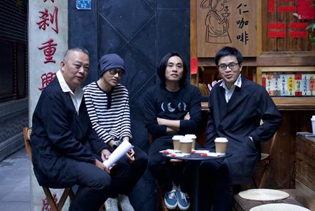
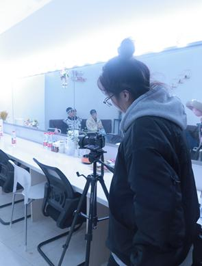

内容与AI
AI采访与新闻写作
采访、AI录音转写、脚本优化与多平台发布。
采访、AI录音转写、脚本优化与多平台发布。
本项目展示了AI工具在新闻采编全流程中的整合应用——从起草采访函、实地采访，到使用小鹿声文进行录音转写和AI辅助结构编辑，最终将文章打磨成可发表的稿件并分发至商界、头条、搜狐等多个平台。充分体现了AI效率工具提升传统新闻生产流程的实践价值。
工作流程从采访准备开始，使用AI工具辅助问题结构设计。采访过程中录制音频，通过小鹿声文进行精准转写。AI辅助编辑优化每篇文章的结构与表达，最终稿件在多个媒体平台发布，触达多元受众。


成功完成并发布多篇采访文章，覆盖三个主流内容平台。AI辅助工作流程在保持高质量编辑水准的同时显著缩短了编辑时间，验证了AI工具在简化传统新闻生产周期中的实际价值。
展示部分稿件